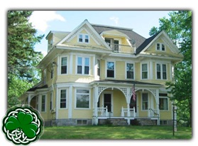

Shamrock Living
The Boston Shamrocks is a hockey organization where hockey players from all over the world come together to play the sport they love. Every year most of the players who are out of state all live in a house together. The house is located near the rink. There are house parents who live there who cook, clean, and drive the girls wherever they have to be. Not everyone lives in the house. About 1/3rd of the players live close to the rink and go to public/catholic/private schools. When I played I went to a Catholic School and drove to the rink everyday for practice after school. Below is a picture of the house and a link that takes you to the Shamrocks website where it describes in detail what it is about.

Visit what Shamrocks Housing is all about